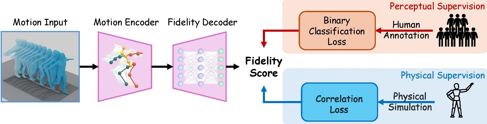
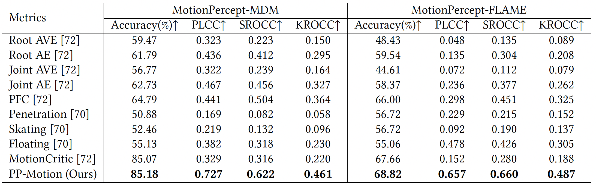

PP-Motion: Physical-Perceptual Fidelity Evaluation for Human Motion Generation
2 University at Buffalo, Buffalo, NY, USA
3 Eastern Institute of Technology, Ningbo, China
4 University of Rochester, Rochester, NY, USA
*Equal Contribution †Co-corresponding
Abstract
We introduce PP-Motion, a data-driven metric for human motion fidelity that bridges the gap between physical feasibility and human perception. We generate fine-grained, continuous physical annotations by computing the minimum adjustments required to make a motion comply with physics simulation, and jointly train with human perceptual preferences via a correlation-based loss (PLCC) and a perceptual ranking loss. PP-Motion achieves stronger physical alignment and comparable or better perceptual alignment than prior metrics on MotionPercept subsets (MDM/FLAME).
Method
PP-Motion takes a motion sequence as input, encodes it into spatio-temporal features, and decodes them into a fidelity score. The training is supervised by two complementary signals. On one hand, we use human perceptual labels and apply a ranking loss that ensures human-preferred motions receive higher scores. On the other hand, we use fine-grained physical annotations and apply a correlation loss that aligns predictions with continuous physics-based labels. Specifically, we adopt Pearson correlation loss, which focuses on relative consistency and captures physical priors more effectively than simple regression. Together, these objectives enable the model to capture both perceptual realism and physical feasibility.

Figure: Overview of the PP-Motion training framework combining perceptual and physical supervision.
Dataset Construction
We build upon the MotionPercept dataset, which provides human perceptual labels. To add physical supervision, we generate new annotations with a physics simulator. For each motion, we train a correction network with reinforcement learning that makes only minimal adjustments until the motion conforms to physical laws. In practice, we consider a motion to follow physical laws if it can be successfully simulated in the physics engine.
As shown in the video, when the original motion contains physically implausible elements, the simulator corrects them so that the sequence can be executed realistically. Conversely, if a motion is already physically valid, the corrected version closely matches the original. This demonstrates that our annotations provide fine-grained labels which capture physical feasibility more precisely and offer strong supervision for training PP-Motion.
Results
PP-Motion shows clear improvements over previous metrics. Evaluated with three correlation measures—Pearson Linear Correlation Coefficient, Spearman Rank Order Correlation Coefficient, and Kendall Rank Order Correlation Coefficient — it achieves much higher correlation with physical annotations, demonstrating stronger alignment with physics. At the same time, it slightly improves perceptual accuracy compared to human-labeled baselines.

Figure: Comparison with previous metrics.
To further illustrate how our metric works, consider the comparison between two videos. To human eyes, the left motion looks more reasonable. However, when tested in the physics simulator, the left motion shows clear floating problems, whereas the right motion is more physically plausible. Our metric successfully captures these differences, assigning scores that reflect both perception and physics.
BibTeX
@misc{zhao2025ppmotionphysicalperceptualfidelityevaluation,
title={PP-Motion: Physical-Perceptual Fidelity Evaluation for Human Motion Generation},
author={Sihan Zhao and Zixuan Wang and Tianyu Luan and Jia Jia and Wentao Zhu and Jiebo Luo and Junsong Yuan and Nan Xi},
year={2025},
eprint={2508.08179},
archivePrefix={arXiv},
primaryClass={cs.CV},
url={https://arxiv.org/abs/2508.08179},
}